Metas de aprendizaje
Intro Bio I (B0160): Fundamentos de la evolución
Recursos
- El libro de texto disponible en Mediacion Virtual
- Las diapositivas de cada clase, disponibles en Mediacion Virtual
- https://evolution.berkeley.edu/ – Mis diapositivas se basan en este recurso
- Lecturas, videos, actividades y otros recursos adicionales disponibles en Mediacion Virtual
Historia de la vida
Evolución biológica y diversidad
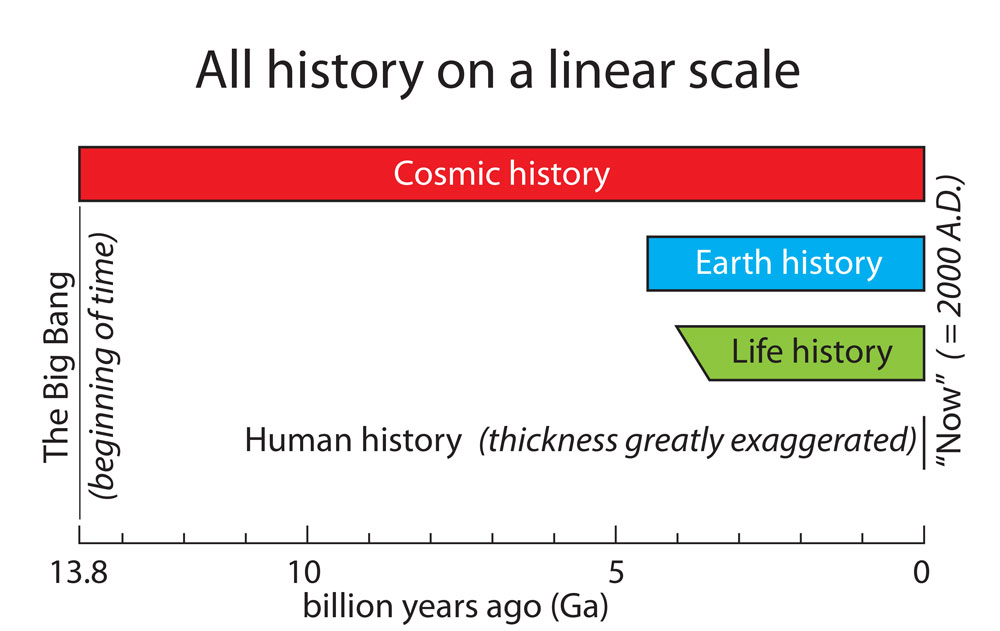
Evolución biológica y diversidad
Ojo!
La evolución biológica explica la diversidad a largos periodos de tiempo
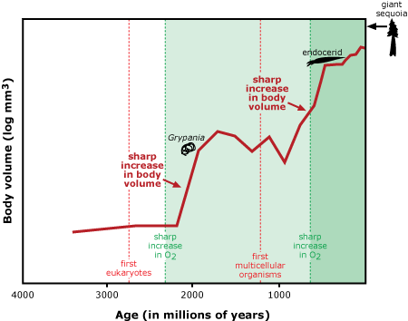
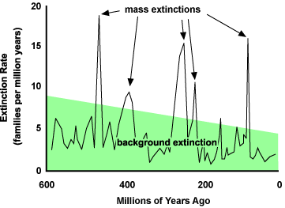
Evolución biológica y diversidad
Ojo!
A través de miles de millones de años de evolución, las formas de vida han seguido diversificándose con un patrón ramificado, desde ancestros unicelulares hasta la diversidad actual en la Tierra
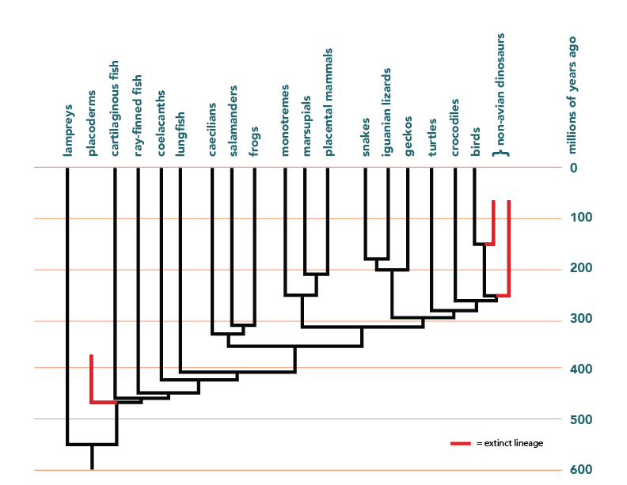
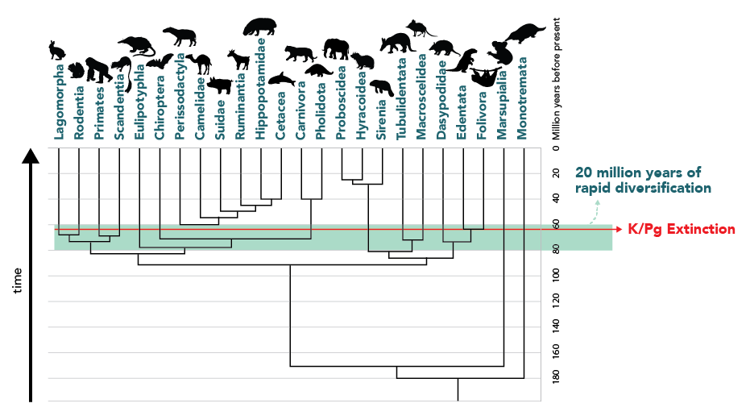
Evolución biológica y diversidad
Ojo!
Las formas de vida del pasado eran en algunos aspectos muy diferentes de las actuales, pero en otros aspectos muy similares
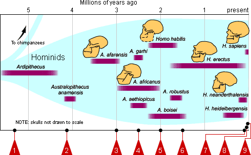

Parentesco y divergencia
Ojo!
Las especies actuales evolucionaron a partir de especies anteriores; el parentesco entre organismos es resultado de un ancestro común
Parentesco y divergencia
Ojo!
Toda la biodiversidad actual tiene un ancestro común
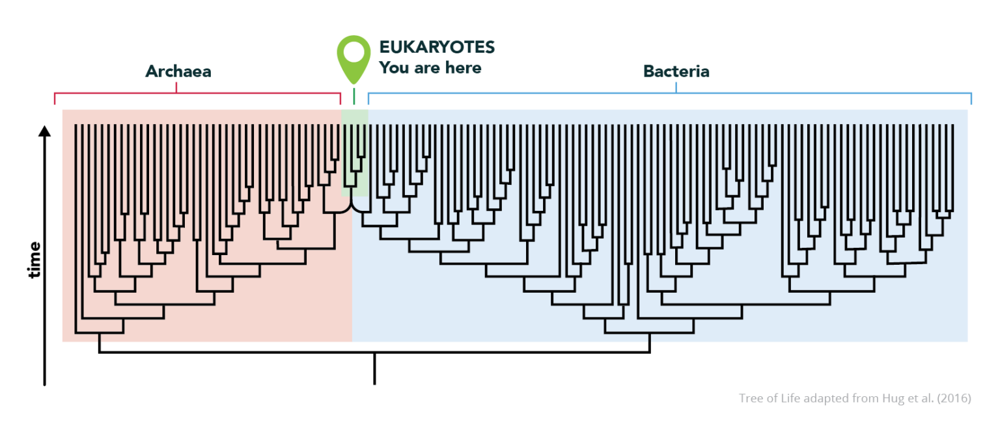
Parentesco y divergencia
Ojo!
Toda la biodiversidad actual y extinta está relacionada en un árbol (o red) anidada
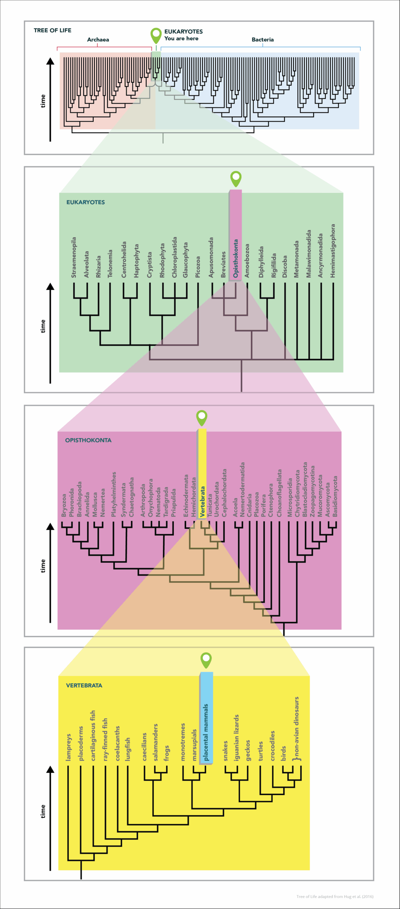
Parentesco y divergencia
Ojo!
El proceso evolutivo temprano de los eucariotas incluyó la fusión de células procariotas
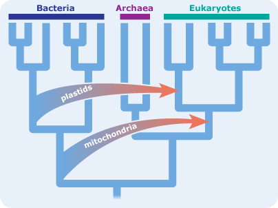
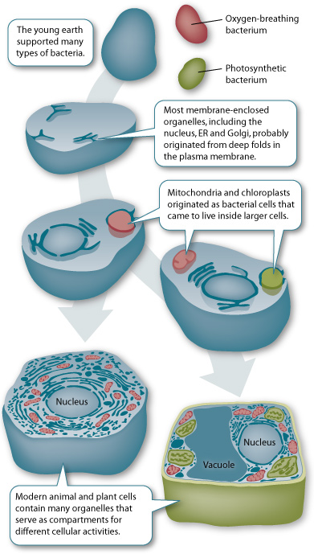
Cambio geológico y evolución
Ojo!
El cambio geológico y la evolución biológica están vinculados
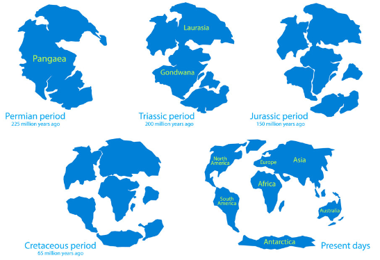
Cambio geológico y evolución
Ojo!
El movimiento de las placas tectónicas ha afectado la evolución y la distribución de los seres vivos
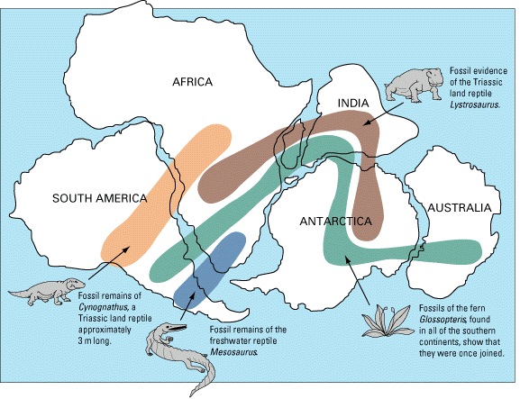
Cambio ambiental y evolución
Ojo!
El cambio ambiental ha afectado la evolución y la distribución de los seres vivos
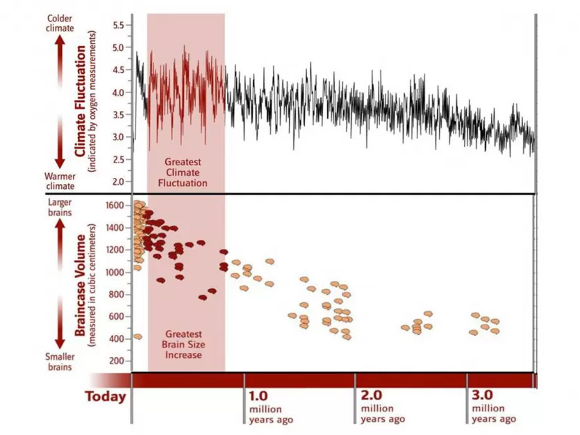
Ritmos de la evolución

Ojo!
Las tasas de evolución varían
Ritmos de la evolución
Ojo!
Las tasas de especiación varían
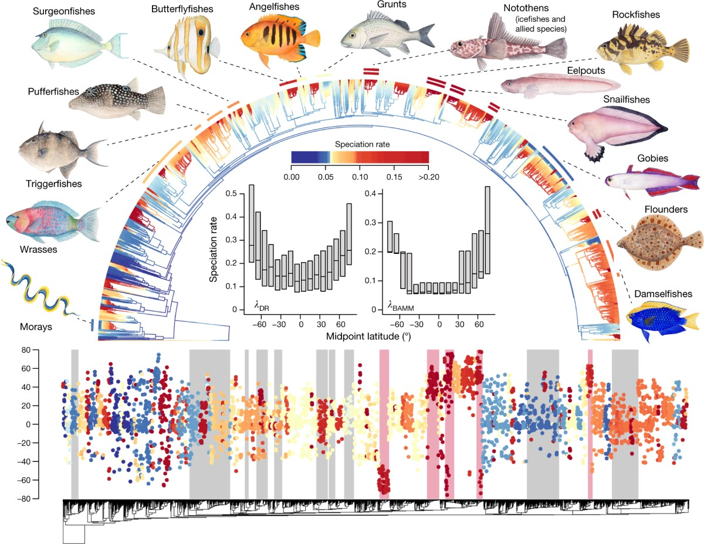
Ritmos de la evolución
Ojo!
Las tasas de extinción varían
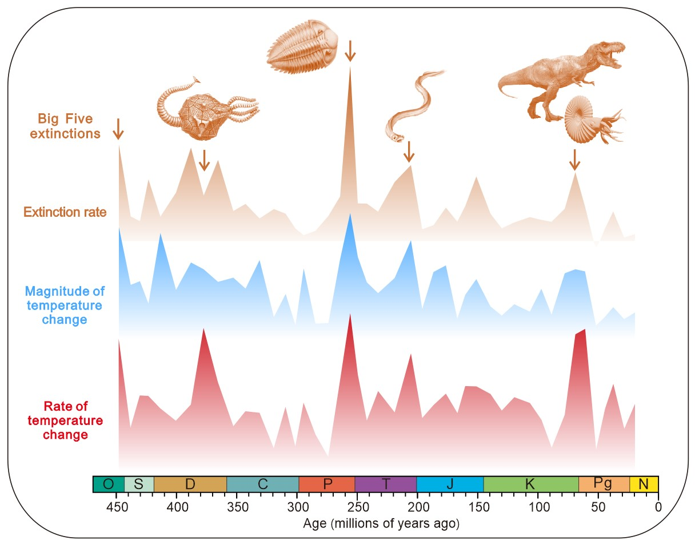
Ritmos de la evolución
Ojo!
El cambio evolutivo a veces puede ocurrir rápidamente
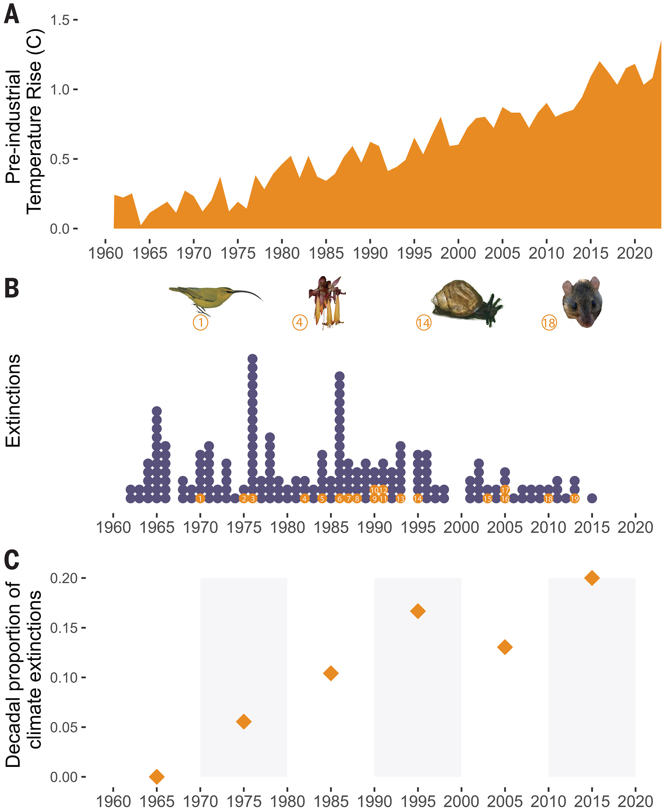
Ritmos de la evolución
Ojo!
Algunos linajes permanecen relativamente sin cambios durante largos periodos de tiempo1
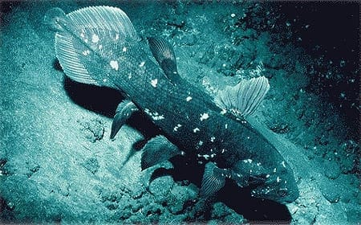
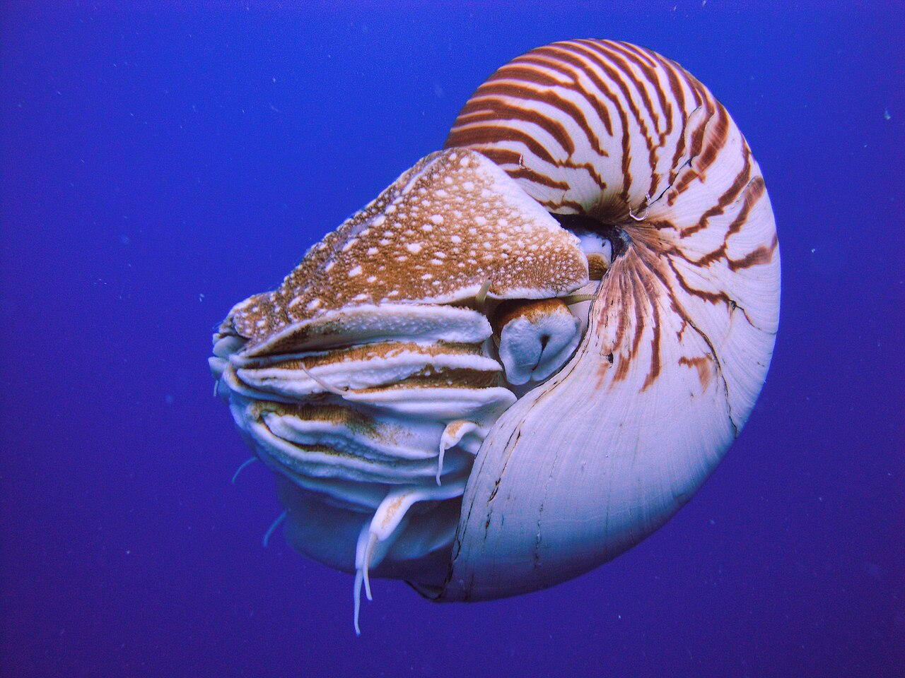

Evidencia de la evolución
Evidencias de la evolución: visión general
- Los patrones de diversidad de la vida a través del tiempo aportan evidencia de la evolución.
- A veces la evolución puede observarse de manera directa.
- Las características de un organismo reflejan su historia evolutiva.
Evidencias en rasgos y adaptación
- Existe ajuste entre los organismos y sus ambientes, aunque no siempre es perfecto.
- Existe ajuste entre la forma de un rasgo y su función, aunque no siempre es perfecto.
- Algunos rasgos de los organismos no son adaptativos.
- En ocasiones, ciertos rasgos adquieren nuevas funciones por selección natural.
Evidencias del registro fósil
- El registro fósil proporciona evidencia de la evolución.
- El registro fósil documenta la biodiversidad del pasado.
- El registro fósil contiene organismos con rasgos transicionales.
- El registro fósil documenta patrones de extinción y la aparición de nuevas formas.
- La secuencia de formas en el registro fósil se refleja en la secuencia de capas rocosas donde se encuentran, e indica el orden en que evolucionaron.
- La datación radiométrica puede usarse con frecuencia para determinar la edad de los fósiles.
Otras líneas de evidencia evolutiva
- Existen similitudes y diferencias entre fósiles y organismos vivos.
- Las similitudes entre organismos actuales (morfológicas, del desarrollo y moleculares) reflejan ancestro común y aportan evidencia de evolución.
- No todos los rasgos similares son homólogos; algunos resultan de evolución convergente.
- La distribución geográfica de las especies suele reflejar cómo el cambio geológico ha influido en la separación de linajes.
- La selección artificial ofrece un modelo para comprender la selección natural.
- Las personas seleccionan rasgos en plantas y animales domesticados para producir descendencia con características preferidas.
Mecanismos de la evolución
Mecanismos de la evolución: concepto base
- La evolución suele definirse como un cambio en las frecuencias alélicas dentro de una población.
- La ecuación de Hardy-Weinberg describe las expectativas del acervo génico de una población que no está evolucionando: muy grande, con apareamiento aleatorio y sin mutación, selección natural ni flujo génico.
Mecanismos principales de cambio evolutivo
- La evolución ocurre mediante múltiples mecanismos.
- La evolución resulta de la selección natural actuando sobre la variación genética de una población.
- La evolución resulta de la deriva genética actuando sobre la variación genética de una población.
- La evolución resulta de mutaciones.
- La evolución resulta del flujo génico.
- La evolución resulta de la hibridación.
Variación, genotipo y fenotipo
- La selección natural y la deriva genética actúan sobre la variación existente en una población.
- La selección natural actúa sobre el fenotipo como expresión del genotipo.
- El fenotipo es producto tanto del genotipo como de las interacciones del organismo con el ambiente.
- La variación de un carácter dentro de una población puede ser discreta o continua.
- Los caracteres continuos generalmente están influidos por muchos genes distintos.
Mutación y aparición de rasgos heredables
- Nuevos rasgos heredables pueden surgir a partir de mutaciones.
- La mutación es un proceso aleatorio.
- Los organismos no pueden producir intencionalmente mutaciones adaptativas en respuesta al ambiente.
- Estructuras complejas pueden producirse de manera incremental por acumulación de mutaciones ventajosas más pequeñas.
Supervivencia, reproducción y adaptación
- Las características heredadas afectan la probabilidad de supervivencia y reproducción de un organismo.
- Con el tiempo, puede aumentar la proporción de individuos con rasgos ventajosos y disminuir la de rasgos desventajosos, según su probabilidad de sobrevivir y reproducirse.
- Los rasgos que confieren ventaja pueden persistir en la población y se llaman adaptaciones.
- Rasgos complejos pueden surgir por cooptación de otro rasgo.
- El número de descendientes que sobrevive para reproducirse exitosamente está limitado por factores ambientales.
- Dependiendo de las condiciones ambientales, las características heredadas pueden ser ventajosas, neutras o perjudiciales.
Modos de selección natural I
- La selección natural puede actuar sobre la variación de una población de diferentes maneras.
- Puede favorecer individuos con un valor extremo de un rasgo y desplazar el valor promedio de ese rasgo en una dirección durante muchas generaciones.
- La selección que favorece un valor extremo de un rasgo reduce la variación genética en la población.
- También puede favorecer individuos con rasgos en ambos extremos del rango de variación.
- La selección que favorece ambos extremos mantiene la variación genética en la población.
Modos de selección natural II
- La selección natural puede favorecer individuos con un valor intermedio de un rasgo.
- La selección que favorece un valor intermedio reduce la variación genética en la población.
- A veces la selección natural favorece heterocigotos sobre homocigotos en un locus.
- La ventaja del heterocigoto preserva la variación genética en ese locus (mantiene múltiples alelos en la población).
- A veces la selección natural favorece rasgos raros y actúa contra rasgos demasiado comunes.
- La selección dependiente de la frecuencia preserva la variación genética en una población.
Selección sexual y aptitud biológica
- La selección sexual ocurre cuando la selección actúa sobre características que afectan la capacidad de conseguir pareja.
- La selección sexual puede producir diferencias físicas y conductuales entre sexos.
- La aptitud biológica (fitness) de un individuo es su contribución al acervo génico de la siguiente generación, en relación con otros individuos.
- La aptitud depende tanto de la supervivencia como de la reproducción.
- La aptitud suele medirse con indicadores indirectos (masa, número de apareamientos, supervivencia), porque el éxito reproductivo es difícil de medir directamente.
Niveles de selección y factores aleatorios
- La selección natural puede actuar en múltiples niveles jerárquicos: genes, células, individuos, poblaciones, especies y clados mayores.
- Factores aleatorios pueden afectar la supervivencia de individuos y poblaciones.
- Las poblaciones pequeñas están más afectadas por la deriva genética que las grandes.
- La deriva genética puede causar pérdida de variación genética.
Efecto fundador y cuellos de botella
- El efecto fundador ocurre cuando una población se origina a partir de un número pequeño de individuos.
- El efecto fundador puede alterar la composición genética de una población recién establecida (y reducir su variación) por error de muestreo.
- Los cuellos de botella ocurren cuando el tamaño de una población se reduce drásticamente.
- Los cuellos de botella también pueden alterar la composición genética de una población (y reducir su variación) por error de muestreo.
Especie y especiación
- Una especie suele definirse como un grupo de individuos que se cruzan real o potencialmente en la naturaleza.
- Existen múltiples definiciones de especie.
- La especiación es la división de un linaje ancestral en dos o más linajes descendientes.
- La especiación suele ser resultado de aislamiento geográfico.
- La especiación también puede ocurrir sin aislamiento geográfico.
- La especiación requiere aislamiento reproductivo.
- El aislamiento reproductivo puede surgir por mecanismos que impiden la fecundación.
- También puede surgir por mecanismos posteriores a la fecundación, cuando el cigoto (o el individuo resultante) tiene baja aptitud.
- Ocupar nuevos ambientes puede generar nuevas presiones de selección y nuevas oportunidades, promoviendo la especiación.
Hibridación y dirección evolutiva
- En ocasiones, la descendencia híbrida surge del cruce entre especies distintas o entre formas parentales distintas.
- Algunos híbridos tienen mayor aptitud que sus progenitores.
- Algunos híbridos tienen menor aptitud que sus progenitores.
- La evolución no consiste en un progreso en una dirección particular. –>